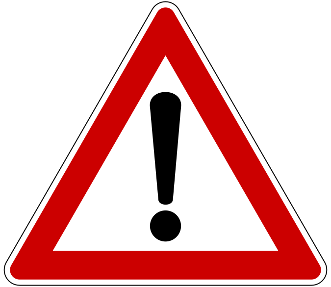

    <link rel="stylesheet/less" type="text/css" href="style-test.less" />
    <script type="text/javascript" src="https://cdnjs.cloudflare.com/ajax/libs/less.js/2.7.1/less.js" integrity="sha256-VxEP3SN/Dd/KSKd/fk89cgZNU9TLIVEz37BYUbGDBk0=" crossorigin="anonymous"></script>

        <inverse unstyle="text-align: left;">
    
    ⚠️Caution</inverse>
